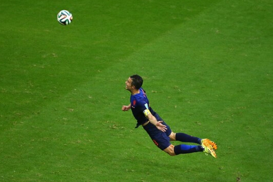

您当前的位置：风语博客 > 慢生活 >
发布时间：2019-11-29 作者：风语 分类：慢生活

这是国外一摄影师拍摄到的，看到这一幕，还真有爱！于是想查查蜗牛是哪科的，百度科普了一下，原来蜗牛是蜗牛是陆生贝壳类软体动物，关键是蜗牛雌雄同体，异体交配，雌雄均产卵。蜗牛本身既当爹... 详细信息
发布时间：2019-11-29 作者：风语 分类：慢生活
引子： 看到昔日好友发了一篇日志《咎由自... 详细信息
发布时间：2019-11-29 作者：风语 分类：慢生活
两年的时间，学习专业课程，临近毕业恨不能找个简单轻松的工作远离编程，可是微薄的工资跟专业相比，找个专业的工作工资能高好几倍。好不容易找到个跟专业符合的工作，五年的时间，从一个水平进... 详细信息
1页3条记录